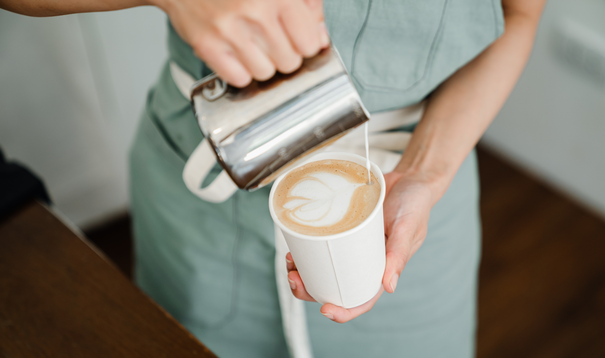

Recipes
Flat White
- Recipe
-
- Ground espresso
- Milk
- Sugar (Optional)
- Prepare 2 espresso shots with optional sugar
- froth milk
- pour foamed milk over espresso
Pumpkin Spice Latte
- Recipe
- Milk
- Pumpkin Puree
- Sugar
- Vanilla and Pumpkin Spice
- Coffee of Choice
- Heat up milk with pumpkin puree, sugar, pumpkin pie spice, and vanilla on the stove
- Mix into coffee — hot or cold
Frozen Irish Coffee
- Recipe
- Vanilla Ice Cream
- frozen milk
- Brandy
- Coffee Liquer
- Put ingredients into a blender. Blend until smooth
- Pour into tall glass
Americano
- Recipe
- espresso
- water
- The typical Americano ratio is 2 parts water and one part espresso.